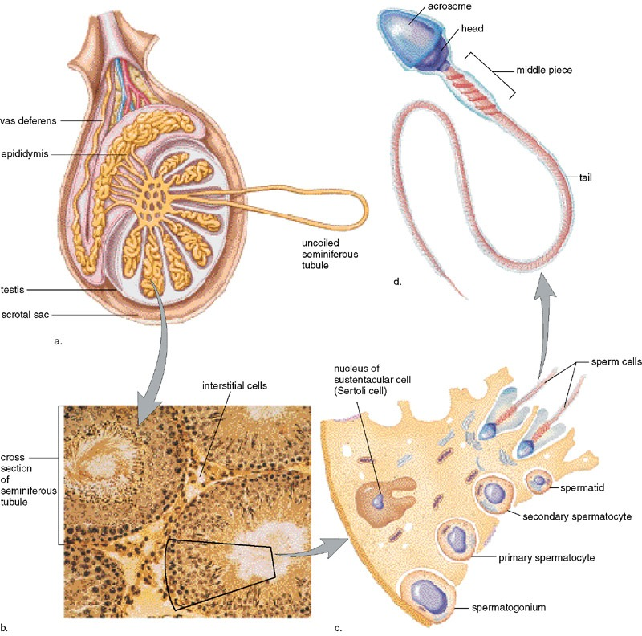

精子发生需要低于体温2-3°C的环境，因此睾丸位于体外阴囊中。支持细胞（Sertoli细胞）提供结构支持和营养。人类精子发生完整周期约64-74天（小鼠34.5天）。
精原细胞G1+S+G2期：8天；减数分裂：13天；精子形成（变态）：13.5天。细胞质桥连接发育中的生殖细胞，实现同步发育。
精子形态：长约60μm，蝌蚪状，分头部和尾部。头部正面观呈扁平椭圆形，侧面观呈梨形。核内含高度浓缩的染色质，前2/3被顶体覆盖，胞质极少。

间质细胞（Leydig细胞）是睾丸中合成睾酮的主要细胞。LH通过cAMP-PKA信号通路刺激间质细胞合成睾酮：
LH → LH受体 → G蛋白 → 腺苷酸环化酶 → cAMP → PKA → 胆固醇转运至线粒体 → 孕烯醇酮 → 睾酮
FSH增强LH刺激的睾酮分泌。支持细胞在FSH作用下分泌抑制素，负反馈抑制FSH分泌。
睾酮的生理作用：
下丘脑分泌GnRH → 腺垂体分泌LH和FSH → 睾丸产生睾酮和精子。